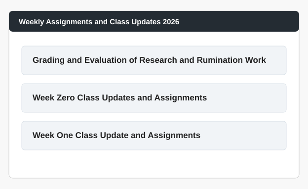
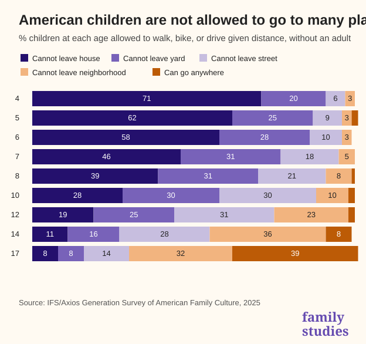
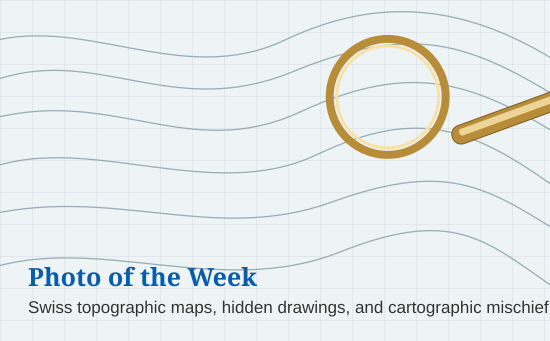
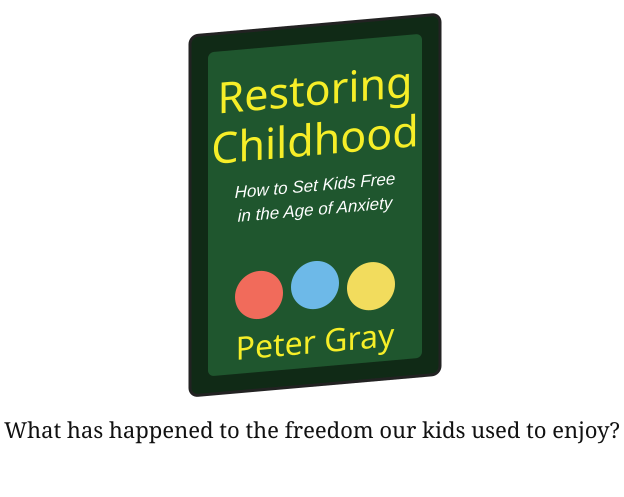

Weekly Reminders / Announcements
Read the Syllabus
The syllabus and all class materials are on Blackboard. Please read the syllabus and related course descriptions carefully. All policies related to grades, assignments, exams, and course procedures are there.
Or DON'T read the syllabus: use the ECON 108 Syllabus GPT.
Explore Blackboard
Blackboard is clunky, but it is the official course communication source. If you hear something about the course from someone and you cannot find it on Blackboard or the course GPT, assume it is not the case.
Topics and Readings This Week
We jump right into course material on Day One. We will not spend class time going over the syllabus or doing introductions. Begin working through the readings in Section One. If you read only a little bit, focus on I, Pencil. The Engerman paper is a useful historical examination of what you are getting yourselves into, and the Otteson chapter is a good attempt to define terms that are often tossed around badly.
UNReading List: The EWOT UNReading List.
Assignments, Recitation, and Exams
Recitation
Recitations begin this week, starting Wednesday, September 2. Watch for a welcome email and additional information from your recitation TA. Please attend only the recitation section for which you are registered.
What do I bring to recitation? Sticks, eyes, feet and brains.
Week One Assignments
Your first research and rumination assignments are due Sunday, September 6 before 6:59pm. Submit them on Blackboard under “Weekly Updates and Assignments 2026,” then “Week One Class Update and Assignment.”

Exemption policy
- All assignments must be completed unless covered by an exemption.
- All students have a no-questions-asked three-exemptions policy.
- There are no extensions, no late work, and no make-ups. The exemption policy is the pressure release valve.
Exam
Your first exam is Friday, October 2 at 2pm. Do not make travel arrangements that conflict with either midterm or the final exam.
TA Office Hours and My Availability
Look for an announcement from Head TA Katherine Watai. Katherine and I work closely on the course. Alexa Pishtey is our assistant instructor and works on course communication, learning tools, staff training, and pedagogy.
For the most up-to-date office-hours information, go to tiny.cc/RizzoHours.
Outdoor office hours are at the picnic tables near Meliora and Harkness. We walk over after the 10:25 class gets out.

Free Access to the New York Times and Wall Street Journal
- NYT access: NYTimes in Education access page. Use your Rochester email.
- WSJ access: WSJ.com/Rochester. Use your university credentials.
Upcoming Special Events
Engerman Lecture
After Shocks: Adaptation and Growth through Volatile Times
Speaker: Richard Hornbeck, University of Chicago
Date: Wednesday, September 16
Time: 5:00pm
Location: Morey 321

Politics and Markets Project
Hosted by Professor David Primo. Follow the project on Instagram.
Department of Economics Special Guest Lecture
Human Capital for Humans, with Pablo Peña of the University of Chicago, moderated by Isaac Miller. Date: Thursday, October 8. Time and location TBD.
Some Items that Caught Our Attention
- Wanna Get An A? Try this.
- Wanna Get An A? Try this too.
- Minimum Wages are Not Magic Wands
- Ban Data Centers … and blow up the economy
- Do You Need to Be a Billionaire to Live Your Dreams?
- Building at 26
- Legal Plunder, Gavin Newsom, and Poop Diapers
- Not on Your Bingo Card?
- Someone Else Should Pay, I Guess
- The Gals are Superior, Jigsaw Puzzle Edition
- In China, the smarter you are, the less entrepreneurial you are
- Are Robots and Asteroid Mining Overrated?
- Against Brokenist Economics
- JEP Symposium on Tariff Economics
- So, Are We Leaving the Labor Force or Not?
- The Free-Market Success of Japanese Rail
- The End of Universities
Chart, Photo, and Video/Book of the Week
Chart of the Week
American kids are not allowed to go very many places without being accompanied by an adult. By age 14, a majority of American kids are not allowed to travel beyond their own street. Even at age 17, more than 60% cannot go beyond their own neighborhoods. Source: High Tech, Low Play: The Life of American Children.

The success of the “don’t go to college” fellowships at identifying top talent and promoting cultural change.
Photo of the Week
Switzerland’s official topographic maps have been hiding secret drawings for decades: a duck, a fish, a hiker, even a marmot.

Video / Documentary / Book / Cartoon of the Week
Video and Peter Gray, Restoring Childhood: What has happened to the freedom our kids used to enjoy?

The Meaning of an Education
You cannot get educated by this self-propagating system in which people study to pass exams, and teach others to pass exams, but nobody knows anything. You learn something by doing it yourself, by asking questions, by thinking, and by experimenting.
— Richard Feynman